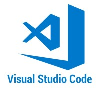
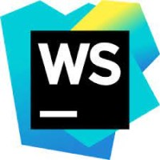
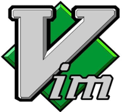
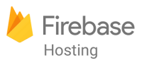

Desenvolvimento Web
Introdução
No cenário digital em constante expansão, o desenvolvimento web se ergue como uma força vital, conectando ideias, empresas e comunidades em todo o mundo. É através desse processo dinâmico e multifacetado que a arquitetura da internet toma forma, transformando conceitos abstratos em interfaces tangíveis. Do canto mais criativo do design visual ao intrincado núcleo do processamento de dados, o desenvolvimento web se desdobra como uma jornada que incorpora a estética e a funcionalidade, a lógica e a criatividade. Nesta exploração, mergulhamos nos fundamentos essenciais e nas inovações recentes que moldam nossa experiência online, descobrindo como a intersecção da tecnologia e da arte nos permite trilhar um caminho ininterrupto rumo à interatividade digital.
O que é desenvolvimento web?
Desenvolvimento web é o processo que dá vida à internet, permitindo a criação de sites e aplicativos interativos que exploramos diariamente. Dividido entre o frontend, responsável pela aparência e interação visual, e o backend, que cuida da lógica e do gerenciamento de dados, o desenvolvimento web é uma fusão de design e programação que transforma ideias em realidade digital. Desde páginas pessoais a plataformas de comércio eletrônico e aplicativos de última geração, essa disciplina molda a maneira como navegamos e interagimos no mundo online.
O que faz um desenvolvedor web?
Um desenvolvedor web é responsável por criar, desenvolver e manter sites e aplicativos para a internet. Suas responsabilidades podem abranger várias áreas do processo de desenvolvimento, incluindo frontend, backend e outras tarefas relacionadas. Aqui estão algumas das principais atividades que um desenvolvedor web realiza:
1. Frontend Development:
-
Criar interfaces de usuário atraentes e responsivas usando HTML, CSS e JavaScript.
-
Garantir que o design seja compatível com diferentes dispositivos e navegadores, garantindo uma experiência consistente.
-
Implementar interatividade, animações e funcionalidades do lado do cliente.
2. Backend Development:
-
Desenvolver a lógica e a funcionalidade do site ou aplicativo.
-
Criar e gerenciar bancos de dados para armazenar informações.
-
Implementar APIs (interfaces de programação de aplicativos) para permitir a comunicação entre o frontend e o backend.
3. Desenvolvimento Full Stack:
-
Dominar tanto o frontend quanto o backend, sendo capaz de construir todo o sistema, desde a interface até a lógica de negócios.
4. Integração de Terceiros:
-
Integrar APIs e serviços de terceiros para adicionar funcionalidades como sistemas de pagamento, redes sociais, etc.
5. Otimização e Desempenho:
-
Otimizar o desempenho do site ou aplicativo para garantir tempos de carregamento rápidos e uma experiência suave para o usuário.
6. Testes e Depuração:
-
Realizar testes para identificar erros, bugs e problemas de compatibilidade.
-
Depurar e corrigir problemas que afetam a funcionalidade do sistema.
7. Segurança Web:
-
Implementar medidas de segurança para proteger os sistemas contra ameaças como ataques de hackers e vazamento de dados.
8. Hospedagem e Implantação:
-
Preparar e implantar o site ou aplicativo em um ambiente de produção para que os usuários possam acessá-lo.
9. Atualizações e Manutenção:
-
Manter o site ou aplicativo atualizado, corrigindo bugs e implementando novos recursos.
10. Aprendizado Contínuo:
-
Ficar atualizado com as últimas tecnologias, linguagens de programação e tendências do desenvolvimento web.
Um desenvolvedor web pode se especializar em áreas específicas, como frontend, backend, desenvolvimento mobile ou segurança cibernética, dependendo das suas preferências e do tipo de projetos em que está envolvido.
O que significa front-end e back-end?
Frontend e backend são dois termos fundamentais no desenvolvimento web, que se referem a diferentes aspectos e componentes envolvidos na criação de sites e aplicativos online.
Frontend:
O frontend se refere à parte visual e interativa de um site ou aplicativo que os usuários veem e com os quais interagem diretamente. É a "frente" da aplicação, a camada que está visível para o usuário final. Isso inclui a interface do usuário, o design, a disposição dos elementos na página e a experiência geral do usuário. As tecnologias usadas no frontend geralmente incluem:
- HTML (Hypertext Markup Language): Responsável por estruturar o conteúdo da página.
- CSS (Cascading Style Sheets): Responsável pelo estilo, aparência e layout da página.
- JavaScript: Responsável por adicionar interatividade, animações e comportamentos ao site ou aplicativo.
Backend:
O backend, por outro lado, é a parte não visível de um site ou aplicativo, onde ocorre o processamento de dados e a lógica por trás das ações. É a "parte de trás" que lida com o armazeidnto, recuperação e manipulação de informações. Isso envolve o gerenciamento de bancos de dados, a autenticação de usuários, a implementação de regras de negócios e a comunicação com o frontend. As tecnologias usadas no backend podem incluir:
-
Linguagens de Programação (Python, Ruby, PHP, Java, etc.): Responsáveis pela lógica de funcioidnto do site ou aplicativo.
-
Frameworks: Conjuntos de ferramentas e bibliotecas que ajudam a acelerar o desenvolvimento e a manutenção do backend.
-
Bancos de Dados: Armazenam e recuperam dados, como informações de usuários, produtos, etc.
-
Servidores Web: Responsáveis por processar solicitações do frontend e fornecer respostas apropriadas.
Ambos frontend e backend são igualmente importantes para criar uma experiência completa e funcional para os usuários. Eles trabalham juntos para criar sites e aplicativos eficazes, onde o frontend apresenta a interface amigável e agradável e o backend lida com os bastidores complexos para tornar tudo isso possível.
O que é um desenvolvimento web full stack?
Desenvolvimento web full stack refere-se à prática de criar aplicativos web que englobam todas as camadas tecnológicas e funcionalidades necessárias para o funcionamento completo de um sistema. Isso envolve tanto o desenvolvimento da parte do cliente (front-end) quanto a parte do servidor (back-end) de um aplicativo web, permitindo que um desenvolvedor "full stack" seja capaz de lidar com todas as etapas do processo de criação.
As principais camadas envolvendo desenvolvimento full stack é:
1.Front-End (Lado do Cliente):-
É a parte com a qual os usuários interagem diretamente. Inclui a interface do usuário, elementos visuais, interações, efeitos, animações e tudo o que um usuário vê e interage em um site ou aplicativo web.
-
Garantir que o design seja compatível com diferentes dispositivos e navegadores, garantindo uma experiência consistente.
-
As tecnologias comuns usadas no front-end incluem HTML, CSS e JavaScript, juntamente com estruturas e bibliotecas como React, Angular, Vue.js, etc.
-
É a parte que lida com a lógica de negócios, processamento de dados e interações com o banco de dados.
-
As tecnologias usadas no back-end variam e podem incluir linguagens de programação como Python, Ruby, Java, Node.js, entre outras.
-
Implementar APIs (interfaces de programação de aplicativos) para permitir a comunicação entre o frontend e o backend.
-
Esta camada lida com a persistência de dados. Ela envolve o armazenamento e recuperação de informações em um banco de dados.
-
Bancos de dados relacionais (como MySQL, PostgreSQL) e bancos de dados NoSQL (como MongoDB, Cassandra) são frequentemente utilizados, dependendo das necessidades do projeto.
-
Os aplicativos web precisam ser hospedados em servidores para que possam ser acessados pela internet. Isso envolve a configuração de servidores, segurança, escalabilidade e gerenciamento de recursos.
-
Muitos aplicativos web modernos são projetados usando uma arquitetura de cliente-servidor, onde o front-end e o back-end se comunicam por meio de APIs (Interfaces de Programação de Aplicativos).Isso permite que diferentes partes do sistema funcionem de forma independente e se integrem sem a necessidade de alterações extensas.
-
Implementar medidas de segurança, como proteção contra ataques, autenticação de usuário e gerenciamento de permissões, é uma parte crítica do desenvolvimento full stack.
Um desenvolvedor full stack é capaz de lidar com todas as etapas do processo de desenvolvimento, desde a criação da interface do usuário até a lógica de negócios e o gerenciamento de dados. Isso permite que eles criem aplicativos web completos e funcionais, com uma compreensão completa de como cada parte do sistema funciona.
Principais tecnologias de desenvolvimento web.
Existem muitas tecnologias utilizadas no desenvolvimento web, abrangendo várias áreas, desde o frontend até o backend, banco de dados, segurança e muito mais. Algumas delas são:
Frontend:
HTML
-
HTML é uma sigla que significa "Hypertext Markup Language", sendo uma linguagem de marcação usada para estruturar e apresentar conteúdo na web. Desempenha um papel fundamental na criação de páginas da web, permitindo que os desenvolvedores definam a estrutura hierárquica do conteúdo, como títulos, parágrafos, imagens, links e muito mais. Também permitindo aos desenvolvedores estruturar e apresentar conteúdo de maneira organizada e significativa, enquanto facilita a interação dos usuários com a internet.

CSS

-
CSS é uma sigla que significa "Cascading Style Sheets", sendo uma linguagem de estilo utilizada junto com o HTML para definir a aparência e o layout de uma página da web. Sua combinação com HTML cria páginas visualmente atraentes e funcionais, ao mesmo tempo em que mantém a separação entre conteúdo e estilo para uma manutenção mais eficiente. Desempenha um papel fundamental na criação de páginas da web, permitindo que os desenvolvedores definam as cores, fontes, espaçamento, tamanhos e muito mais. Também permitindo aos desenvolvedores estilizar e organizar o conteúdo de maneira agradável e significativa, enquanto facilita a interação dos usuários com a internet.
JavaScript
-
JavaScript é uma linguagem de programação usada para adicionar interatividade, animações e comportamentos a páginas da web. Desempenha um papel fundamental na criação de páginas da web, permitindo que os desenvolvedores criem sites e aplicativos interativos, com funcionalidades complexas e uma experiência de usuário agradável. Também permitindo aos desenvolvedores criar sites e aplicativos que respondem a ações do usuário, como cliques de botão, movimentos do mouse, etc.
Backend:
-
Node.js, Python, Ruby, PHP, Java: São linguagens de programação que são destinadas para a lógica do servidor.
-
Express.js, Ruby on Rails, Django: É um conjunto de ferramentas, bibliotecas, padrões e componentes pré-construídos que ajudam os desenvolvedores a criar aplicativos e serviços do lado do servidor de maneira mais eficiente e organizada.
Segurança:
-
HTTPS: "Hypertext Transfer Protocol Secure", é um protocolo de comunicação seguro utilizado na internet para proteger a transferência de dados entre um navegador (cliente) e um servidor web. Ele é uma versão segura do HTTP e utiliza criptografia para garantir a confidencialidade e integridade dos dados durante a comunicação.
-
JWT, OAuth: Mecanismos para autenticação e autorização seguras.
Essas tecnologias formam a base do desenvolvimento web moderno e são utilizadas para criar sites e aplicativos funcionais, interativos e seguros. A escolha das tecnologias depende das necessidades do projeto e das preferências da equipe de desenvolvimento.
Melhores editores de código
A escolha do melhor editor de código depende das preferências pessoais, das necessidades específicas do projeto e das tecnologias que você está usando. Alguns dos mais populares e amplamente recomendados são:
- Visual Studio Code (VS Code): Um editor de código gratuito e altamente extensível
desenvolvido pela
Microsoft.
Ele oferece uma ampla gama de recursos, como realce de sintaxe, depuração integrada, controle de versão e
suporte a extensões.
Clique aqui para baixar o Visual Studio Code
 - Sublime Text: Um editor de código leve, rápido e altamente personalizável, com uma grande
comunidade de
usuários e uma variedade de plugins.
Clique aqui para baixar o Sublime Text
- Atom:
Um editor de código de código aberto desenvolvido pelo GitHub. É altamente personalizável e possui uma
comunidade ativa de desenvolvedores criando extensões. O Atom foi arquivado pelo GitHub, pois detectaram um
acesso não autorizado a um conjunto de repositórios utilizados no planejamento e desenvolvimento do próprio,
não sendo um editor atualizado quanto os outros citados.
Clique aqui para baixar o Atom
- Visual Studio: Uma IDE (Integrated Development Environment) poderosa da Microsoft,
adequada
para uma ampla
variedade de linguagens e plataformas. Ele oferece uma série de ferramentas avançadas para
desenvolvimento.
Clique aqui para baixar o Visual Studio
- WebStorm: Uma IDE da JetBrains voltada para desenvolvimento web. Ela oferece suporte a
tecnologias front-end
e back-end, bem como recursos avançados de produtividade.
Clique aqui para baixar o WebStorm
 - Brackets: Um editor de código de código aberto desenvolvido pela Adobe, projetado
especificamente para
desenvolvimento web, com recursos como edição ao vivo e visualização em tempo real.
Clique aqui para baixar o Brackets

- Emacs: Um editor de texto altamente personalizável e expansível que tem uma curva de
aprendizado íngreme,
mas oferece uma infinidade de recursos e extensões.
Clique aqui para baixar o Emacs
- Vim: Um editor de texto poderoso e altamente configurável, conhecido por sua eficiência e
controle granular
por meio de comandos.
Clique aqui para baixar o Vim
 - Notepad++: Um editor de código leve para Windows que oferece uma variedade de recursos
úteis para
desenvolvimento.
Clique aqui para baixar o Notepad++
- Nova: Um editor de código relativamente novo que ganhou popularidade por sua interface
moderna e recursos
intuitivos.
Clique aqui para baixar o Nova
Lembre-se de que a escolha do editor de código é altamente subjetiva e pode variar com base nas suas preferências e na natureza do projeto em que você está trabalhando. A melhor abordagem é experimentar alguns editores diferentes e escolher o que melhor se adapta ao seu fluxo de trabalho e necessidades.
Quais opções gratuitas utilizar para hospedagem de site?
Existem várias opções gratuitas para hospedar sites estáticos, como páginas pessoais, portfólios, sites de negócios, etc. Alguns dos mais populares são:
-
GitHub Pages: Se você estiver usando Git e desejar hospedar um site estático, o GitHub Pages é uma excelente escolha. Ele é gratuito para projetos de código aberto e permite que você hospede seu site diretamente de um repositório GitHub.
Clique aqui para acessar o GitHub Pages
-
Netlify: Netlify oferece hospedagem gratuita para sites estáticos e possui integração contínua, permitindo que você publique automaticamente as alterações do seu repositório Git.
Clique aqui para acessar o Netlify
-
Vercel: Assim como o Netlify, o Vercel é uma plataforma de hospedagem gratuita para sites estáticos. Ele também suporta integração com Git e oferece implantação contínua.
Clique aqui para acessar o Vercel
-
Firebase Hosting: O Firebase, da Google, oferece hospedagem gratuita para sites estáticos e aplicativos web. É especialmente útil se você também estiver interessado em usar outros serviços Firebase, como autenticação e banco de dados em tempo real.
Clique aqui para acessar o Firebase Hosting
 -
000WebHost: É uma opção popular de hospedagem gratuita que suporta PHP e bancos de dados MySQL. No entanto, a versão gratuita pode ter algumas limitações em termos de recursos e largura de banda.
Clique aqui para acessar o 000WebHost
-
InfinityFree: Oferece hospedagem gratuita com suporte a PHP e MySQL, além de um construtor de site simples.
Clique aqui para acessar o InfinityFree

-
Heroku: Embora tenha uma camada gratuita, Heroku é mais voltado para aplicativos web dinâmicos e não estáticos. Ele oferece suporte a várias linguagens de programação, como Node.js, Ruby, Python, etc.
Clique aqui para acessar o Heroku
Essas são apenas algumas das opções disponíveis para hospedar sites estáticos gratuitamente. A melhor escolha depende das suas necessidades específicas e do tipo de projeto em que você está trabalhando.
Dicas de como iniciar a carreira de desenvolvimento web.
Iniciar uma carreira no desenvolvimento web pode ser empolgante, mas também requer planejamento e aprendizado contínuo. Aqui estão algumas dicas para começar com o pé direito:
-
Aprenda os Fundamentos: Comece com HTML, CSS e JavaScript, que são os blocos de construção fundamentais para o desenvolvimento web. Entenda como eles funcionam juntos para criar páginas interativas e visualmente atraentes.
-
Domine uma Linguagem de Programação: Além do JavaScript, escolha uma linguagem de programação backend, como Python, Ruby, Java ou PHP. Domine a linguagem e seu ecossistema para construir a lógica do servidor.
-
Explore Frameworks e Bibliotecas: Familiarize-se com frameworks populares, como React, Angular ou Vue.js, para o desenvolvimento frontend, e frameworks backend como Django, Ruby on Rails ou Express.js. Eles aceleram o desenvolvimento e são muito valorizados no mercado.
-
Crie Projetos Pessoais: A melhor maneira de aprender é praticar. Crie projetos pessoais que abordem diferentes aspectos do desenvolvimento web. Isso ajuda a aplicar o que você aprendeu e a construir um portfólio.
-
Utilize Git e Versionamento de Código: Aprenda a usar sistemas de controle de versão como o Git. Isso facilita a colaboração e o rastreamento das alterações no código ao longo do tempo.
-
Construa um Portfólio Online: Crie um site ou página pessoal para mostrar seus projetos, habilidades e experiências. Um portfólio bem organizado pode impressionar potenciais empregadores ou clientes.
-
Estude Design Responsivo e UI/UX: Entenda como criar layouts que funcionem bem em diferentes dispositivos e se familiarize com princípios de design de interface e experiência do usuário.
-
Participe de Comunidades Online: Participe de fóruns, grupos de mídia social e plataformas de aprendizado online para interagir com outros desenvolvedores, fazer perguntas e aprender com a comunidade.
-
Cursos e Recursos Online: Utilize plataformas de aprendizado online, como Udemy, Coursera, Codecademy e Khan Academy, para cursos e tutoriais sobre desenvolvimento web.
-
Estágios e Projetos Freelance: Procure por oportunidades de estágio para ganhar experiência prática. Projetos freelance também podem ajudá-lo a construir um portfólio e a entender as demandas do mercado.
-
Mantenha-se Atualizado: O desenvolvimento web evolui rapidamente. Esteja disposto a aprender constantemente novas tecnologias, padrões e práticas recomendadas.
-
Networking: Conecte-se com outros profissionais da área, participe de eventos de tecnologia, conferências e meetups locais para expandir sua rede profissional.
O desenvolvimento web é uma área vasta e em constante evolução, com muitas oportunidades para aprender e crescer. A melhor maneira de começar é mergulhar de cabeça e se envolver com a comunidade. Começar no desenvolvimento web requer paciência, dedicação e prática consistente. Ao construir suas habilidades gradualmente e explorar diversas áreas do desenvolvimento, você estará bem encaminhado para uma carreira bem-sucedida nesse campo em constante evolução.
Sobre mim:
Meu nome é Gabriel da Silva Durães, tenho 19 anos e estou cursando o 2º período de Ciências da Computação na Escola Superior Dom Helder Câmara. Sou natural de Belo Horizonte, Minas Gerais, e atualmente moro em Ibirité, Minas Gerais. Esse site foi criado com o intuito de aprender a desenvolver um site em HTML na matéria de Desenvolvimento de Aplicação Web Frontend, ministrada pelo professor Vinicius Von Glehn De Filippo. As informações contidas neste site foram retiradas do Chat GPT e o autor da página foi responsável apenas pela edição e adaptação do conteúdo.